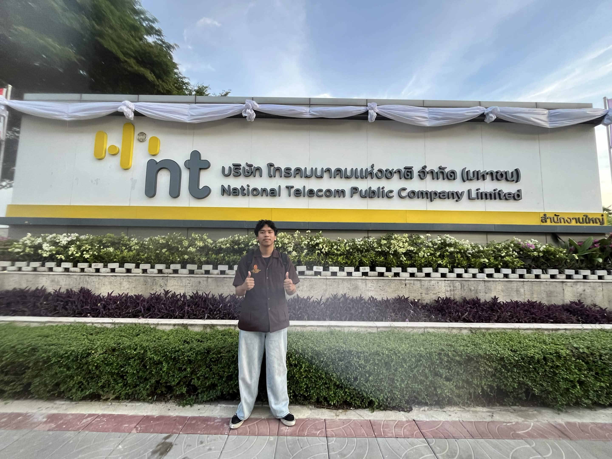

บริษัท โทรคมนาคมแห่งชาติ จำกัด (มหาชน) หรือ NT เป็นรัฐวิสาหกิจด้านโทรคมนาคมและดิจิทัลของประเทศไทย ให้บริการโครงสร้างพื้นฐานด้านโทรคมนาคม อินเทอร์เน็ต โทรศัพท์ ทั้งภายในและระหว่างประเทศ รวมถึงบริการด้านดิจิทัลและเทคโนโลยีสารสนเทศแก่ภาครัฐและภาคเอกชน
เลขที่ 99 อาคารศูนย์บริการลูกค้า ถนนแจ้งวัฒนะ แขวงทุ่งสองห้อง เขตหลักสี่ กรุงเทพมหานคร 10210
NT เกิดจากการควบรวมกิจการระหว่าง บริษัท ทีโอที จำกัด (มหาชน) (TOT) และ บริษัท กสท โทรคมนาคม จำกัด (มหาชน) (CAT) ซึ่งทั้งสองบริษัทเป็นรัฐวิสาหกิจด้านโทรคมนาคมที่ถือหุ้นโดยกระทรวงการคลัง 100% โดย CAT เริ่มต้นจากธุรกิจสื่อสารโทรคมนาคมระหว่างประเทศ ในขณะที่ TOT เริ่มต้นจากธุรกิจสื่อสารโทรคมนาคมภายในประเทศ ต่อมาคณะรัฐมนตรีมีมติเมื่อวันที่ 14 มกราคม 2563 ให้ทั้งสองบริษัทควบรวมกิจการเพื่อลดความซ้ำซ้อนในการลงทุนของภาครัฐและเพิ่มประสิทธิภาพในการดำเนินงาน จนกระทั่งวันที่ 7 มกราคม 2564 จึงได้ดำเนินธุรกิจภายใต้ชื่อใหม่อย่างเป็นทางการคือ บริษัท โทรคมนาคมแห่งชาติ จำกัด (มหาชน) หรือ NT ภายใต้วิสัยทัศน์ "องค์กรหลักในการขับเคลื่อนและยกระดับการสื่อสารและดิจิทัลให้กับประเทศเพื่อธุรกิจที่ยั่งยืน"
ฝ่ายวิจัยและพัฒนา
บริษัท โทรคมนาคมแห่งชาติ จำกัด (มหาชน)